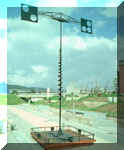
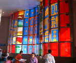
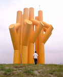
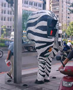
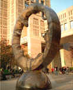
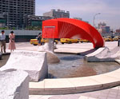
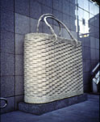
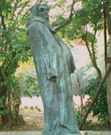
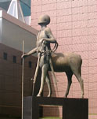
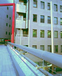

公共藝術三國誌
呂清夫
青山依舊在，幾度夕陽紅

但是進入近代以後，由於資本主義與資本家
的崛起，藝術的支持者不再是宗教或政權，不須再有「助人倫、成教化」的功能，於是藝術開始流入私人手中，藝術只要滿足私人的趣味，至於一般民眾能否看懂已
經不是問題，這才造成了民眾的疏離感，會覺得近代以後的藝術晦澀難解。好在二十世紀三十年代以後，開始有人重新思考個中的問題，並思挽狂瀾於既倒，這就出
現了公共藝術。公共藝術要求曲高和眾，它被放在公共空間之中，供給不特定或特定大多數人欣賞，故起碼民眾要能接受，民眾不能接受的公共藝術還可以被撤走。
所以藝術與民眾的關係又有越走越近的感覺。
這種公共藝術因屬於公共事務，因之，常由
政府規定建築或工程總經費中的某一定比例要用在公共藝術上，此即所謂「百分比公共藝術計劃」，目前全世界實行這個計畫的國家有法國、美國、義大利、瑞典、
西德、挪威、荷蘭、瑞士、丹麥、日本，其中丹麥的比例高達2%。這是藝術家參與公共事務的契機，藝術家都要走出工作室，開始製作一些工作室無法容納的、建築規模
的巨大作品。為了實現這種複雜龐大的計畫，藝術家必須學習相應的技術，同時要能與很多人和諧共事。藝術家不能再躲在象牙塔中。
但是不管藝術與民眾的親密度如何，藝術還是持續地發展下去，人生短藝術長，藝術仍舊不變表現感情
的本質，藝術史的演變不過就像「幾度夕陽紅」，米羅的維納斯、雲崗的大佛、歌德式的伽藍、芝加哥的抽象雕刻都一樣萬古長青。只是當你碰到藝術與民眾的蜜月
期，不妨稍稍加以留意。
美國「國家藝術基金」的努力
在美國，公共藝術之所以盛行，應有三個原因。其一是一九六七年甘迺迪政權結束之後，「國家藝術基金」的成立。其二是各地方政府大舉展開都市更新計劃。建築的式樣於是從以往的石頭、紅磚的裝飾性正
面，轉向流線型的、功能性的帷幕大廈。基地也因大樓高層化的緣故，遂將巨大而乏味的建築物，轉變為周圍闢有廣場的開放空間，故土地利用有了全新的方向。其
三是六十年代最低限藝術和普普藝術的出現，催生了巨型藝術品的問世。
美國歷史上本有不少的戶外雕塑，特別是與文化､戰爭有關的作品頗為不少。但美國真正的公共藝術則可
分成三期，六十年代屬於第一期，亦即「公共服務署」（gsa）剛推出「建築中之藝術計劃」之時。在這個期間，畢卡索、H.摩
爾、杜比菲、卡爾達、野口勇等人都開始創作大型作品，但是起初市民未必接受，後來才逐漸認同。公共藝術家重視的是基地的空間特性、居民的接受、企業的支
援,這些乃是戰後公共藝術成立的要素，但是六十年代的美國，幾乎都沒有顧慮到這方面來。所以日本方面的評價似乎沒有我們高，他們說，公共藝術戶外雕塑運動
乃是政府的化妝師，是背負著越戰包袱的甘迺迪與尼克森總統的社會革新計劃之一，但其結果卻變成宣示政府與企業的意識型態的看板，或富強的象徵而已。
到了七十年代中期，便進入第二期，於是出現了李伯曼（
a. liberman），利奇（
g.ricky，文首左上圖︰台北中山美術公園的利奇作品）， 史密斯（t.smith）等只在都市創作的雕塑家。他們開始製作一些思索都市環境及空間
問題的作品，有人在積極克服都市的壓迫，有人在與人工化的都空間市尋求調和。
八十年代以後則進入第三期，對認真思考公共藝術的人來說，大家不再只給都市添加裝飾品，而是創造都
市景觀，或與都市水乳交融的作品。其作品的共同點在於創作街頭傢具和景觀設計，而非如以往一般的美術與雕塑。如伯頓（s. burton）的石椅和長凳，
阿瑪賈尼（s.armajani）的橋樑，密斯（m.miss）的景觀設計等是。
總括起來，雖然在一九六六年的階段，亦即「國家藝術基金」剛推出「公共場所的美術計劃」之時，美國
的公共藝術還只是寥寥無幾，然到一九八八年已經多達一百三十五件。同時「國家藝術基金」不但支援雕塑，也支援影像、表演、及非傳統的藝術表現。除了主要的公共藝術計劃之外，「國家藝術基金」尚由委員會決定提供補助款，在
全國展開多元性的公共藝術計劃，意在鼓勵景觀設計、都市設計、工業設計、視覺設計等傑出的設計專業。相比之下，我們的「國家文化藝術基金會」還有待急起直
追。
內行
領導外行的美國作品徵件
美國公共藝術的發展關鍵在於政策的推動，最早的政策是一九三三年的「公共藝術作品計畫」(PWAP)，在大恐慌時代仍為藝術家
提供了生存之道。一九六二年甘迺迪總統訂定了「聯邦政府建築的基本方針」, 而為著都市環境的重建，從一九六三年起，美國又開始實施政府主導的雕塑計劃。於是配合現代建築，
設置了很多現代主義大師的巨大雕塑。此即「公共服務署」的「建築中之藝術計劃」（art-in-architecture Program），內容是公共建築必須勻出0.5%的工程費來設
置藝術品（主要指雕塑）。可惜除了少數之外，多半的作品都在社區未曾參與或溝通的情況下設置起來，因之，直到今天還有很多與居民發生爭論的例子。這個計畫
的地方版是二十七個州的「百分比公共藝術計劃」（Percent for Art Programs），亦即建築工程費的1%到2%要用在公共藝術上。
一九六六年，「國家藝術基金」（NEA）推出「公共場所的
美術計劃」（Art in Public Places
Program），其任務是碰到社區要為公共場所委託製作或購入作品時，可以提供補助或建議。不論地方政府或非營利
團體，如要設置公共藝術時，都可以申請設置經費半額的補助金。美國的公共藝術基本上都會接受NEA的補助金，所以作品的選定方法都會遵循NEA的統一模式。當然，不需要接受補助的地方政府自可以我行我素。
就聯邦政府的公共藝術而言，係由「公共服務署」來推動，但實際上碰到公共藝術的徵選時，則負起諮詢
任務的機關是「國家藝術基金」，其運作的方式如下：
一、含有公共藝術計劃的建築簽約以後，「公共服務署」便開始委託「國家藝術基金」提出若干藝術家的
名單。「國家藝術基金」首先要聘請遴選委員，這些委員除了本案的建築師之外，必須包含三位地區藝術團體的成員。這些成員應該是美術館館長、研究員、美術評
論家、或大學美術科系的教授。
二、遴選委員要負責選出三至五位藝術家，這些藝術家必須是全國性、地區性、或當地著名的創作者，他
們必須能夠考慮特定的或一般的環境要求，同時有能力創作與環境協調的作品。
三、如是選出的藝術家名單便由「國家藝術基金」送到「公共服務署」，並由該署的複審小組為這個名單重作檢討，再推薦給「公共服務署」作最後的決選。由此完成的作品有芝加哥聯邦廣場的柯爾達作品、波士頓的甘迺
迪紀念堂廣場之狄米崔哈茲作品、蒙他納州萊比水壩的巨型紀念浮雕。
就地方政府的公共藝術而言，其主體是當地政府所召集的委員會，這類似我們的執行小組，但其委員 主要由美術專家所組成，政府官員或民間資助者都不參與。在作品的取得方式來說，共有三種，亦即邀請比件、直接委託、評選價購，但是評選價購的情況很少，更 少看到公開徵件，多半採用的是邀請比件。
首先，就直接委託而言，委員會要先決定設置基地，而為求過程透明化，須先召開民眾公聽會，並經 過充分的討論。其次，要決定創作者與作品，其各階段也要利用公聽會或大眾傳播，來使過程透明化。
當基地決定下來以後，委員會還要另外成立一個小委員會，以便遴選創作者，這相當於我們的評審委
員，但名單出爐之後須先經地方政府與NEA認可，背景均限
於美術專業人員，成員共六人。
在這同時，委員會要向NEA申請補助，此事必須全力爭 取，因為它將影響到創作者的選擇、以及不足經費的募款。至於小委員會在遴選創作者之前，要先勘查設置基地，以檢討基 地的適合性，有時可能會在創作者選定之後再決定基地。小委員會在選定 創作者之時，要參酌建築、都市計畫、景觀等專家的意見，但這些專家僅作為諮詢對象。
其次，就邀請比件而 言，在選定創作者的階段以前都跟直接委託相同，但在選擇創作者時，通常先找出創作者三到四名，他們都要提出作品的模型，並展示於街上的醒目地點供民眾參 觀、投票，也利用電視、報紙讓民眾投票，並將結果提供評審的參考，充分達到民眾參與的效果。
日本「雕刻造街運動」的草
根性
談到日本公共空間裡的藝術品設置，在明
治維新以前以佛像雕刻為多，明治維新到二次大戰之間，則以個人的銅像為多，二次大戰以後才開始有雕刻藝術的設置，其間又可以分成三期﹕
第一期從終戰到一九六○年左右，屬於健
康寫實期。這段期間雖然也有銅像的鑄造，但以歷史人物或文化人為對象。而多半的戶外藝術題材常見的是自由、健康、和平、和平祈念像、產業祈念像、建設與和
平、家族像、母子像，尤以母子像為最多。可以說屬於健康寫實的創作，顯示戰後新的社會價值觀或意識型態。
第二期從一九六○年到一九七五年左右，
屬於雕刻造街期。一九五八年，由於宇部市民捐款響應「滿城飛花運動」而剩下一些閒錢，於是公園管理課乃在宇部站前廣場設置了一座法可尼的「浴女像」，不料
立刻佳評如潮，於是引發了全國的「雕刻造街」運動，並出現了好幾個著名的戶外雕刻競賽。進入一九七○年以後，由於環保意識高張，不但增設環保廳，也制定都
市綠地保全法，雕刻於是跟鮮花、綠地一起更加受到重視。
第三期從一九七五年到現在，屬於社區營
造與文化振興期。由於國民所得已跟歐美並駕齊驅，所以市民生活已從經濟層面擴及文化層面，政府機關於是呼應民情，形成文化領導政治的「文化時代」。其次，
由於經濟高度成長與過度中央集權，曾使地方喪失了個性與魅力。為了找回地方的特色、為了使都市更為人性化，於是出現了所謂「地方時代」。
在文化性與地方性交互作用之下，於是從
一九七八年起，1%公共藝術計畫乃在全國風起雲湧，這包括神奈川、兵庫、滋賀、福島、秋田、尼崎等縣市。至於支持
同樣的構想，追求地方行政文化至上的地區尚包括埼玉縣等十七個縣、二十五個市町。有日本景德鎮之稱的常滑市乃是其中最成功的一個例子，主要因為這裡除了政
府十分用心之外，民間更自發性地積極推動，他們不迷信大師，而是全民一起動手做，並以當地特有的陶瓷為表現媒材，民眾參與非常徹底。
日本雕刻展、雕刻營都列入公共藝術
日本中央政府並沒有一個明顯的法規在規範公共藝術，也沒有補助公共藝術的「國家藝術基金」，他們
的文化廳並未插手管理公共藝術，但是整個看來，日本的公共藝術推行的還不錯，它主要是靠地方政府努力的結果，特別是二次大戰以後的雕刻造街運動(1958)、或1%公共藝術計畫曾引起全國的迴響。
日本設置公共藝術的目的有三，即一、景觀的營造，二、地方特色的表現，三、文化的振興。至於作品的取得方式，則包括一、公開徵選（基 地先確定）、二、公開徵選（基地未確定）、三、邀請比件、四、直接委託、五、評選價購、六、.雕刻營等六大類。在台灣，同樣也有公開徵選（基地未確定）、雕刻營，但是我們似乎沒有從公共藝 術的角度去加以重視。
就景觀的營造而言，作品的大小、形態、色彩、素材要能反映基地的環境，讓環境與作品產生密切的關連，才可能營造景觀。由於評選價購很難具有 此種關連性，因之，不適於景觀營造。其他方式才比較具有關連性，只是對於基地認知有程度的不同而已。公開徵選（基地未確定）、.雕刻營由於已知基地是在舉辦的行政區 內、或在公園、道路的特定區域之內，所以對於基地認知可能限於行政區而已。相對的，公開徵選（基地先確定）、邀請比件、直接委託則可以清楚地認識基地的位 置。公開徵選（基地先確定）還有可能是複數的基地，讓創作者有選擇的餘地。如果創作者有這個餘地，那就更容易在作品中反映基地的環境。
就地方特色的表現而 言，可能要利用當地的天然資源、或產業相關的素材，或者產業、歷史、自然相關的地區特性為作品主題，或許較能在作品中客觀地反映地方的特色。為達到此一目 的，評選價購以外的方式較為合適。
就文化振興的目的而言，為了促進文化的發展，為了將藝術品放在日常空間之中來達到美育的效果，在 作品的選擇上自然要以藝術性為主要考量。這時固可以採用評選價購，可以採用公開徵選（基地先確定、基地未確定）來選作品，至於其他方式則可以選擇創作者。由於公共藝術往往必須受不特定大多數人的肯定，所以必須大眾 化，不能只重藝術性，此事他們是靠大眾傳播、民眾參與來加強民眾的藝術意識。
台灣錢淹腳目的公共藝術
台灣公共藝術的發展關鍵在於民國八十一年頒佈的「文化藝術獎助條例」，此即百分比條款。其第九 條第一項規定︰「公有建築物所有人，應設置藝術品，美化建築物與環境，且其價值不得少於該建築物造價百分之一。」次年並公佈「文化藝術獎助條例施行細 則」。因之，各級政府機關不得不開始注意公共藝術。本條例頒佈的時間是一個政治更開放､經濟更成長､文化更多元的時段，因之，重視文化環境的時機已經成 熟。民國八十一年也是歷年來國民平均所得成長最快的一年，一下子成長到9536美元，幾乎就要突破一萬美元大關。它比上一年度成長了將近1400美元，至於民國七十五年的國民平 均所得，則不過只有3646美元。
回想民國八十年，行政院耗資新台幣八兆二千億元的「國家建設六年計畫」，曾於七月一日正式進入 執行階段。該計畫本是配合李總統的六年任期，在最短期限內擬定的「六年經建計畫」，其後為提昇計畫的格局，由經建會就經濟、教育、文化、醫療……等建設作 全盤規劃，以加速總體經社發展，並恢復民眾對政府的信心。六年計畫不再經濟掛帥，而以「重建經濟社會秩序，謀求全面 平衡發展」為總目標，並輔以四項政策目標：即「提高國民所得」、「厚植產業潛力」、 「均衡區域建設」、「 提昇生活品質」，其後兩項都跟文化有關。政府由此推動一系列重大公共建設，使我國邁 向嶄新的現代化國家。
國家建設六年計畫中的文化建設項目很多，包括籌設東部民俗技藝園，籌建藝術銀行計畫，推展假日 文化廣場計畫，籌設現代文學資料館，推動中書外譯計畫，籌設公共電視台。文建會為配合國家建設，曾擬定「文化建設方案」、「國家建設六年計畫文化建設計畫 案」與「充實省(市)、縣(市)、鄉鎮及社區文化軟硬體設施」各分項計畫，而最重要的是完成「文化藝術獎助條例」及「國家文化藝術基金會設置條例」的立法，這是台灣文化史 上非常重大的一頁，。
但回顧台灣公共藝術的發展，應可分成三期，其一是萌芽期︰過去台灣的公有建築物或開放空間曾有 一些藝術品，如日據時代的中山堂設有「水牛群像」，烏山頭水庫設有水利工程師「八田與一像」，自然然也有不少政治銅像，但光復後都被撤走。光復以後，由於 戰時體制，仍以政治銅像居多，偶而夾以扶輪社捐獻的雕塑，或宗教界設置的大佛之類。
其二是實驗期︰台灣真正有公共藝術是在八十一年「文化藝術獎助條例」頒佈以後。最先著手的是台北市捷運局，早在民國八十一年便成立「捷運公共藝術專 案」，並於八十二年七月即開辦公共藝術公開徵件，但仍屬實驗階段（左圖︰捷運局在北淡線附近的士林國小設置的公共藝術 ）。行政院則於八十二年編列一億元「藝 術創作品設置費」，由文建會協助各機關設置示範性的公共藝術，此即「公共藝術示範（實驗）計畫」，並於全國九處公有建築物（如各文化中心）或公共建設（如 屏東公園）興辦公共藝術，並預定於八十四年全部設置完成。基於這些示範（實驗）計畫的經驗，乃於民國八十七年頒佈「公共藝術設置辦法」。
其三是展開期︰根據「公共藝術設置辦法」，交通部所屬的四個單位都在積極推   
在地方政府方面，台 北市捷運局則於八十七年底完成新店線､中和線四站的公共藝術。八十八年則在推動南港線､新店線另四站的徵件，並採國際競圖，期使捷運乘客不看站牌就知道到 了哪一站。九十年則有都發局的「敦化通廊」（右圖 ︰台北敦化通廊上的黃中宇作品）公共藝術。台北縣政府亦於八十八年以後興辦陶瓷博物館、十三行博物館、縣政府新建大樓的公共 藝術（經費七千萬）。各級學校方面有清華大學、中國醫藥研究所、護理學院、台大醫院附屬兒童醫院、南湖高中、育成高中、中崙高中、文昌國小等校進行設置， 至此可以說全國都動了起來。
三國公共藝術事務比較表
|
|
美國 |
日本 |
台灣 |
|
相關法規或計畫 |
1.建築中的
藝術（1963） 2.公共場所
的藝術（1066） 3.百分比公 共藝術計劃（％ for Art Programs） |
.雕刻造街運動(1958) |
1.文化藝術獎助條例(1992) 2.公共藝術設置辦法(1998) |
|
目的 |
1.超越紀念
雕刻 2.增進藝術
的發展及民眾的認知與關心 |
1.地方特色的表現 2.景觀的營造 3.文化的振興 |
美化建築 物與環境 |
|
主管機關 |
1.公共服務署(GSA) 2.國家藝術基金(NEA) 3.各地方政府 |
各地方政府 |
1.文建會 2.各地方政府 |
|
甄選方式 |
1.邀請比件 2.直接委託 3.評選價購 |
1公開徵選（基地先確定） 2.公開徵選（基地未確定） 3.邀請比件 4.直接委託 5.評選價購 6.雕刻營 |
1.公開徵選 2.邀請比件 3.直接委託 4.評選價購 |
|
執行小組 與評審委員背景 |
1.委員會（相當於執行小組，由地方政府召集）與小委員會（相當於評審委員，共六人，須經地方政府與NEA認可）均限於美術專業人員。 2.建築、都市計畫、景觀等專家僅為諮詢對象。 |
1.公開徵選（基地未確定） 的評審以美術評 論家為限。 2.執行小組的成員為美術評論家、創作者、建築師、都市計畫師、造園師、地方行政官員、資助者。 |
1執行小組四至七人，包括機關首長、美術行政、美術評論、藝術創作、本案建築師或工程師、本案管理 機關代表。 2.評選委員五至七人，美術評論家、創作者、應用藝術家各最少一人（以上依設置辦法修正草案）。 |
|
作品實例 |
密西根州的柯爾達作品 |
東京都廳舍的公共藝術  關根伸夫作品 |
板橋新站的公共藝術
 田邊武作品
|
藝術家疲於奔命的台灣現況
台灣的公共藝術的設 置過程比較接近美國，台灣也有一個「國家文化藝術基金會」，只可惜都沒有注意到公共藝術上來，值得有關單位加以檢討。如前所述，台灣有一個母法「文化藝術 獎助條例」，並有其「施行細則」，另外尚有「公共藝術設置辦法」。只是實際的執行全靠地方政府，而且組織與手續繁多，例如各單位必須召集成員十三至十七人 的審議委員會、成員七至九人的執行小組、成員不定的評審小組。各單位且並須一一撰寫公共藝術設置計畫書、公共藝術徵選結果報告書、公共藝術設置完成報告 書，他們都要交給審議委員會去審，可以說相當煩瑣。
由於「公共藝術設置辦法」規定審議委員必須包含多種人士，如藝術創作、藝術行政、藝術評論、應 用藝術、藝術教育、都市設計、建築設計、景觀造園、社區或公益團體代表、法律專家、地方政府建築或都市計畫業務主管等十一種人士都要，真是猗歟盛哉，這使 得執行單位常常搞錯。
譬如他們召集的執行小組也好、評審小組也好，都要找上這一大票人來，有時連法律專家都請來參加 投票，以致評選結果常與美術館的評選南轅北轍，知名藝術家也常為此槓龜。其實「公共藝術設置辦法」只規定執行小組需要的人士是藝術創作、藝術行政、藝術 教育、該建築物之建築師或工程之專業技師、該建築物或工程之管理機關代表等五種人而已，不知什麼緣故使執行單位那麼「善」體上意？至於評審小組則無明文規 定，故情況更為紊亂。
因之，在今年四月出爐的「修正草案」中，重新規定執行小組只要四至七人， 成員只要藝術行政或藝術評論或藝術創作等專業人士、該建築物之建築師或工程之專業技 師、該建築物或工程之管理機關代表等三種人士。另外，特別規範評審小組為五至七人，成員其中須包括下列各類專業人士至少各一人：一、藝術創作，二、藝術評 論，三、應用藝術。
這個規範確實接近美國的方式，不過問題似乎沒有完全解決，因為審議委員會的成員沒有跟著調整， 不但成員同樣多達十一種專業，而且人數同樣多達十三至十七人，以如此人多業雜的組織來審議比較單純的評審結果，不知能否很快找到交集？其實審議委員的重要 任務係在於審查程序是否合法，或者說僅是合法性的把關而已，其他大可放手給地方政府去發揮，為何需要那麼多人呢？不會頭重腳輕嗎？
這一方面可能為了行政的方便，亦即委員多請一點，可以免去會開不成的窘境，因為總是會有一些人
來開會，而要聯絡委員開會也比較省事。但也可能碰到對某案例特別重要的專業人士反而沒有出席，錯失了關鍵性的審議。我們覺得，委員不請則已，要請的話應該
設法讓他們都能出席，如此審議才能面面俱到。
台灣公共藝術的取得方法有四，即公開徵件、邀請比件、直接委託、評選價購，其中以公開徵件最為 常用。其實各地的「雕刻展」也可以納入討論，但是由於欠缺整體規劃， 所以常常不能善用資源，如文建會的「禮運大同篇國際石雕展」到後來，只有 將徵得的作品一一送人了事。
各地的「雕刻營」同樣可以納入公共藝術來討論，因為其中民眾參與度高，作品也都準備放在公共場所，但是大家似乎沒有從公共藝術的角度去看它， 甚至讓它自生自滅，殊為可惜。不管從文化獎助或公共藝術的角度去看，文建會與國家文化藝術基金會應該好好注意這個資源，並多加扶植。
台灣公共藝術的未來
有人說，公共藝術常是社會意志的表現，佛像要表現神佛的形象，政治銅像要表現功在國家的人物， 兩者都在表現社會的意志，這是公共空間中的雕刻本質，故佛像是基於宗教信仰，政治銅像是基於國家主義。但是現代公共藝術則是立足於表現自由的民主化之現代 社會。

關於作品量身定做的問題在國外也有，主 
關於創作者常是某些人的問題，可能因為執行單位沒有深入思考公共藝術執行的創意，於是一些作業 常常落入固定的模式，甚至變成例行公事，這一來如要「邀請比件」自然只會想到固定的某些人，卻無法挖掘到社會的潛在活力，或藝術家的全面表現力。另一方面 是有的藝術家本身對於公共藝術並不了解，以致經常錯失參與的機會，有時即使參與，也往往掌握不到要領，卻常以過去的象牙塔經驗去處理公共藝術，因之，在公 共藝術的徵件中往往無法出線。
 
此事亦牽涉到作品的水準，只有高水準的作品才能充分反映藝術家的性格，而藝之不同各如其面。其 次，也只有高度的創意才能與基地充分取得協調，好的公共藝術要在個性與適合性間取得平衡點。台灣由於行政作業的關係，藝術家常要被迫限期趕工，無法慢工出 細活。總之，由於公共藝術家經常出現熟面孔，因之，這些人難免要疲於奔命，這使得行政上出的問題雪上加霜。
本來，在近代以前， 藝術與民眾之間並無鴻溝，亦不特別需要公共藝術，可以說有藝術就是公共藝術。但是進入近代以後，藝術變成私有化，品味亦隨之脫離大眾，走向小眾趣味或所謂 精英主義，藝術於是失去了公共性，自然也就難以具有所謂美化環境的功能。公共藝術的出現則被期望力挽這個狂瀾於既倒，而不僅限於創作區區的紀念碑。公共藝 術的目的可能在於走回藝術的原點，使藝術能像近代以前那樣親近民眾。
只是近代以前的藝術 也未必毫無問題，例如宗教、政治的問題屬之，不同的宗教常會互相排斥對方的藝術或宗教圖像，蘇非亞大教堂本來的基督教圖像後來即被改成回教圖像，北魏的佛 像也曾經遭到儒者的嚴重破壞，故有所謂廢佛毀寺的舉動。政治的更迭更為嚴重，中國歷來每逢改朝換代，前朝的文物常被付諸一炬，日據時代的台灣建築在光復後 也常遭殃。不過，具有現代觀念的公共藝術計畫都在避免類似的舉動，它可能要注意的層面很多，例如族群、宗教、性別的平等都要非常小心，以免遭到任何一方的 抵制。
舊金山有一個紀念碑曾引起有色人種的激烈爭議。紀 念碑雕像塑造了三個人，亦即牛仔、傳教士、及一個柔順的印第安人（圖︰舊 金山的紀念雕像）。單單這個部份多年來一直發生問題，根據舊金山藝術 委員會（S.F. Art Commission）的調查，它一向是原住民（印第安人） 塗鴉及破壞的對象，原住民並希望將之移走，至於牛仔雕像手中原有的套索也早就被人拆走。
日本寶塚市寶塚大橋曾有一件題名為「愛之手」的作品曾經引起婦女團體的抗議，認為它歧視女性，因 為該作品雕塑一隻男人的手上，托著女人的裸體。台北大安公園中的觀音塑像也一度引起靈糧堂的基督教徒的抗議，並要求政府將之移走，大概市因為基督徒覺得不 公平，為何厚此薄彼，不能放基督的雕像？所以公共藝術的計畫必須面面俱到，這是現代民主社會應有的態度。
過去的大佛像、政治銅像、美國的自由女神像、巨大的抽象雕刻、東歐政治銅像拆走後改設的美術品等 等，其實本質上都沒有變，都是紀念碑的一種。近年的觀是要超越這種紀念碑的永恆性，傾向一種短暫性，亦即文化藝術、都市景觀的事件藝術都可以被列入公共藝 術。
公共藝術如要回到藝術的原點，那麼，表現自由不能抵觸別人的自由，而個性與公共性、藝術性與大眾 化、永恆性與臨時性都要找到平衡點。
附註：本文部份參考筆者撰寫的「公共藝術一百問」。